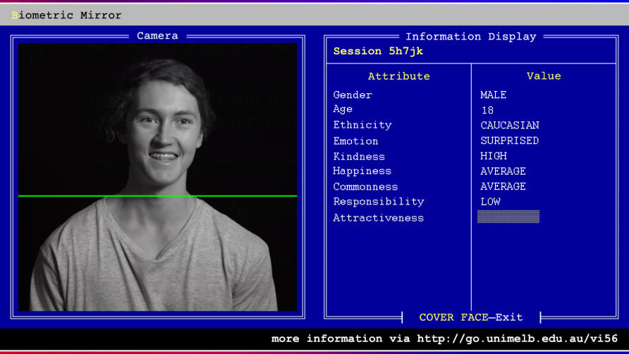

Is AI ethics just... ethics?
About me

Ethics Litmus Tests
Slides
What is AI? What is Machine Learning?
So...
Is AI ethics just... ethics?
Yes..and...
"technology's role as a social, political and environmental accelerant"
Same old challenges of software engineering...
...now with added consequencesTM
Problems of scale
For example...

- 1.2 billion photos per day uploaded to Google photos in 2017
- Manually labelling each one would take well over 1 million people working full time
- If 1% of those label decisions were flagged for human review and each review took 3 minutes, it would require 150,000 people working full time (Google currently employs 103,459 people)
Problems of abstraction

geekswithblogs.net/TimothyK/archive/2019/07/30/the-17-layered-app

Problems of bias and inequality
Structural inequality may not be a new problem...
...but many of these techniques are

Harm mitigation is... complicated
Interpretability
-vs-
Explainability
-vs-
Recourse
Problems of Responsibility
"The shakey spear"
The locus of moral agency
I truly do not understand why so many AI luminaries see the drive for interpretability as a threat.
— Liz O’Sullivan (@lizjosullivan) February 21, 2020
If this AI surgeon killed your mom, you’d probably want to know if it was preventable. A defect. Someone’s fault. That’s how our legal system works. If AI can’t work w/our laws... https://t.co/QgxMNjF2H4
Moral crumple zone
Moral Crumple Zones: Cautionary Tales in Human-Robot Interaction
Problems of ontology
How do we define a measure for what's fair?
Recognition of the powerful pattern matching ability of humans is growing. As a result, humans are increasingly being deployed to make decisions that affect the well-being of other humans. We are starting to see the use of human decision makers in courts, in university admissions offices, in loan application departments, and in recruitment. Soon humans will be the primary gateway to many core services.
behavioralscientist.org/principles-for-the-application-of-human-intelligence/
Building ML systems in a capitalist, corporate context:
Classification exerts a normative force (it's never purely descriptive)
Biometric Mirror
pursuit.unimelb.edu.au/articles/holding-a-black-mirror-up-to-artificial-intelligence
There is no prediction;
only intervention
"Maths gloss"
In conclusion
In industry, it’s far too common there’s no discussion of societal harm or danger to freedom or rights. Just — can we make money on this? COOL. SHIP IT. I’ve worked alongside too many of these people, and I’m never going back. https://t.co/BEznnsobIC
— Liz O’Sullivan (@lizjosullivan) March 2, 2020